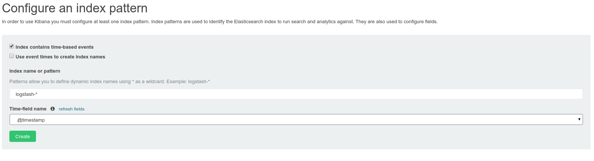
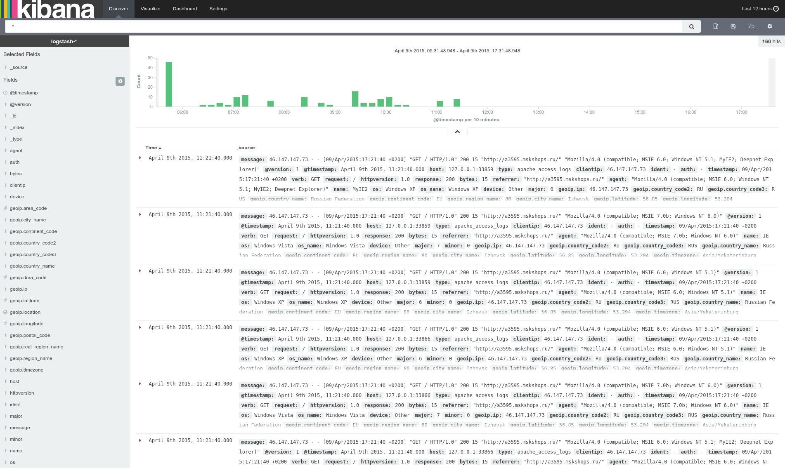
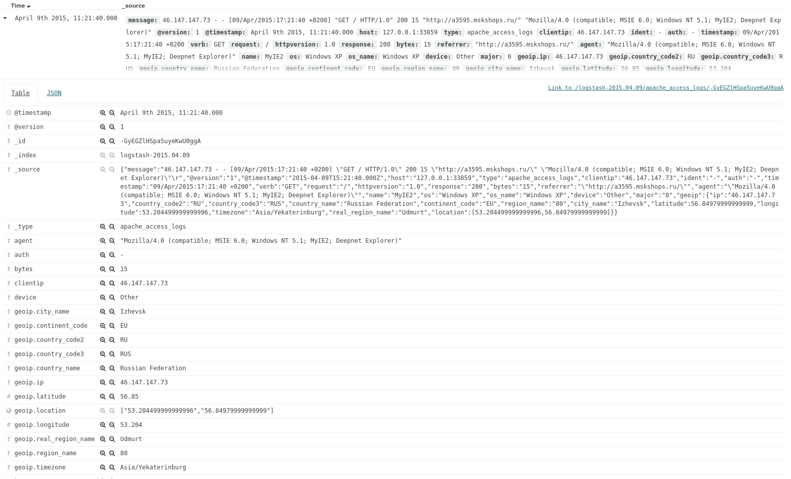
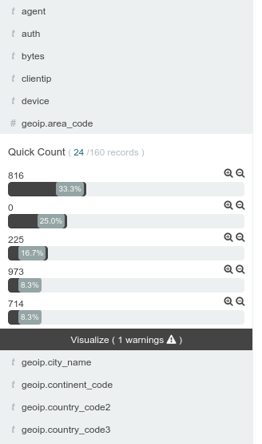
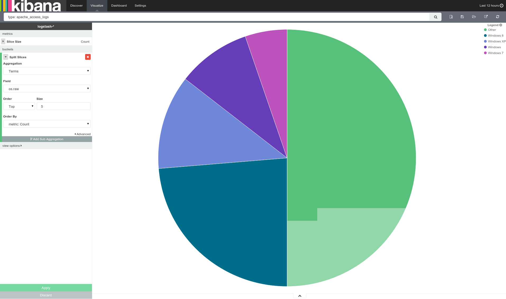
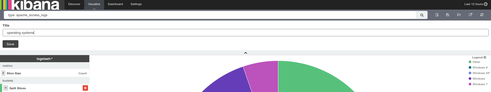
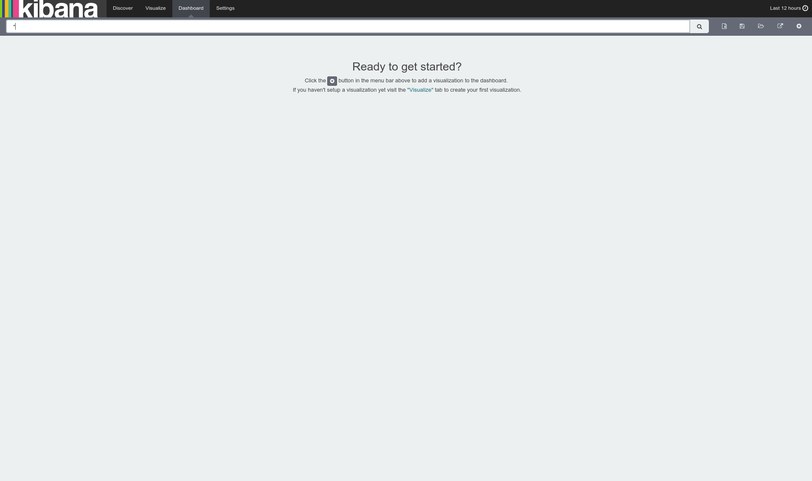
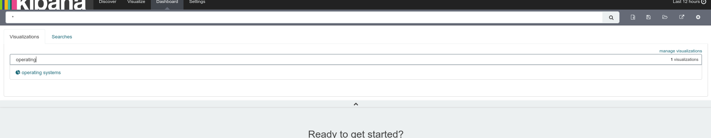
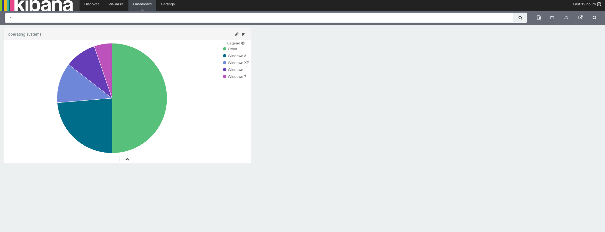
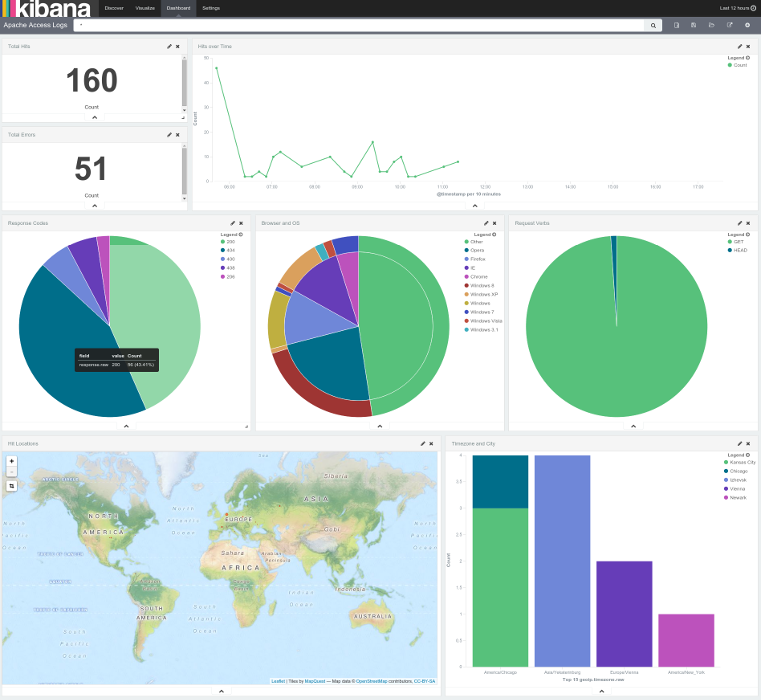

The ELK Stack
Using an animal to wrangle your logs
Except not really
Created by Spencer Julian
What is ELK?
Elasticsearch
Logstash
Kibana
You know, for search...
A quick aside...
Integrate into wiki search
Hadoop
Anywhere else you use search
As a datastore
Github
CERN
Netflix
Wikimedia

Logstash. Because what else would it be?
Inputs
Filters
Outputs
Inputs
collectd drupal_dblog elasticsearch eventlog exec file ganglia gelf gemfire generator graphite heroku imap invalid_input irc jmx log4j lumberjack pipe puppet_facter rabbitmq rackspace redis relp s3 snmptrap sqlite sqs stdin stomp syslog tcp twitter udp unix varnishlog websocket wmi xmpp zenoss zeromq
Filters
advisor alter anonymize checksum cidr cipher clone collate csv date dns drop elapsed elasticsearch environment extractnumbers fingerprint gelfify geoip grep grok grokdiscovery i18n json json_encode kv metaevent metrics multiline mutate noop prune punct railsparallelrequest range ruby sleep split sumnumbers syslog_pri throttle translate unique urldecode useragent uuid wms wmts xml zeromq
Outputs
boundary circonus cloudwatch csv datadog datadog_metrics elasticsearch elasticsearch_http elasticsearch_river email exec file ganglia gelf gemfire google_bigquery google_cloud_storage graphite graphtastic hipchat http irc jira juggernaut librato loggly lumberjack metriccatcher mongodb nagios nagios_nsca null opentsdb pagerduty pipe rabbitmq rackspace redis redmine riak riemann s3 sns solr_http sqs statsd stdout stomp syslog tcp udp websocket xmpp zabbix zeromq
Not your poolside shelter (that's a 'cabana').
Some flaws...
Simplicity (a lack thereof)
The Backing Corporation
Some competitors.
Loggly
Splunk>
Configuration
Elasticsearch
network.host: localhost
/etc/elasticsearch/elasticsearch.yml
Kibana
Nothing Required (for us)
Logstash
input event | filter event | output event
Event Life
Input
input {
tcp {
port => 3333
type => apache_access_logs
}
}
/etc/logstash/conf.d/20-tcp-input.conf
Output
output {
elasticsearch {
host => localhost
}
stdout {
codec => rubydebug
}
}
/etc/logstash/conf.d/90-elasticsearch-output.conf
Filter
filter {
if [type] == "apache_access_logs" {
grok {
match => { "message" => "%{COMBINEDAPACHELOG}" }
}
date {
match => ['timestamp', 'dd/MMM/yyyy:HH:mm:ss Z']
}
useragent {
source => "agent"
}
geoip {
source => "clientip"
target => "geoip"
}
}
}
/etc/logstash/conf.d/40-apache-filter.conf
%{IPORHOST:clientip} %{USER:ident} %{USER:auth} \[%{HTTPDATE:timestamp}\] "(?:%{WORD:verb} %{NOTSPACE:request}(?: HTTP/%{NUMBER:httpversion})?|%{DATA:rawrequest})" %{NUMBER:response} (?:%{NUMBER:bytes}|-) %{QS:referrer} %{QS:agent}
Usage










Animals are not log-wranglers.
Elasticsearch: You know, for Search...
Logstash: It's a log. With a mustache.
Kibana: Still not a thing by a pool.
Vagrant VM on github: http://git.io/veFGC (kuruoujou/Vagrant-Elk-Stack)